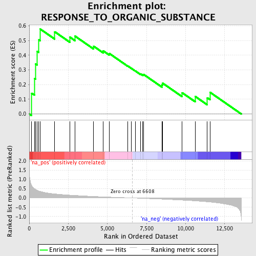
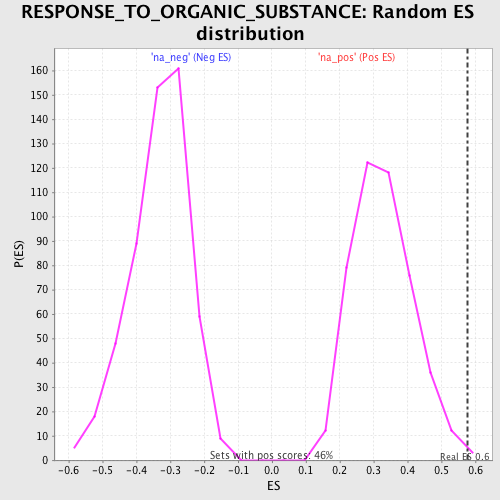

| | | Dataset | GSEA_Acromegaly_prerank |
| Phenotype | NoPhenotypeAvailable |
| Upregulated in class | na_pos |
| GeneSet | RESPONSE_TO_ORGANIC_SUBSTANCE |
| Enrichment Score (ES) | 0.5780074 |
| Normalized Enrichment Score (NES) | 1.7728797 |
| Nominal p-value | 0.0043668123 |
| FDR q-value | 0.18254146 |
| FWER p-Value | 0.519 |
Table: GSEA Results Summary

Fig 1: Enrichment plot: RESPONSE_TO_ORGANIC_SUBSTANCE
Profile of the Running ES Score & Positions of GeneSet Members on the Rank Ordered List
| PROBE | GENE SYMBOL | GENE_TITLE | RANK IN GENE LIST | RANK METRIC SCORE | RUNNING ES | CORE ENRICHMENT | | 1 | ME1 | | | 156 | 0.675 | 0.1415 | Yes |
| 2 | ABCG1 | | | 336 | 0.501 | 0.2419 | Yes |
| 3 | DUOX1 | | | 412 | 0.459 | 0.3405 | Yes |
| 4 | CHRNA7 | | | 509 | 0.414 | 0.4273 | Yes |
| 5 | DUOX2 | | | 617 | 0.375 | 0.5045 | Yes |
| 6 | CDH13 | | | 709 | 0.354 | 0.5780 | Yes |
| 7 | ABAT | | | 1630 | 0.220 | 0.5599 | No |
| 8 | EIF2B2 | | | 2593 | 0.155 | 0.5239 | No |
| 9 | SOD1 | | | 2923 | 0.137 | 0.5306 | No |
| 10 | NDUFS4 | | | 4120 | 0.084 | 0.4612 | No |
| 11 | GLRX2 | | | 4736 | 0.061 | 0.4296 | No |
| 12 | AQP9 | | | 5136 | 0.048 | 0.4110 | No |
| 13 | BRCA2 | | | 6305 | 0.009 | 0.3268 | No |
| 14 | EIF2B5 | | | 6542 | 0.002 | 0.3098 | No |
| 15 | BCL2 | | | 6788 | -0.006 | 0.2931 | No |
| 16 | GOT2 | | | 7121 | -0.018 | 0.2727 | No |
| 17 | DGKD | | | 7256 | -0.023 | 0.2680 | No |
| 18 | EIF2B1 | | | 7315 | -0.025 | 0.2694 | No |
| 19 | SUPT5H | | | 8482 | -0.066 | 0.1982 | No |
| 20 | EIF2B4 | | | 8535 | -0.068 | 0.2098 | No |
| 21 | EIF2B3 | | | 9780 | -0.118 | 0.1447 | No |
| 22 | RELA | | | 10616 | -0.160 | 0.1194 | No |
| 23 | CLEC7A | | | 11388 | -0.209 | 0.1098 | No |
| 24 | GYS2 | | | 11570 | -0.223 | 0.1471 | No |
Table: GSEA details [plain text format]

Fig 2: RESPONSE_TO_ORGANIC_SUBSTANCE: Random ES distribution
Gene set null distribution of ES for RESPONSE_TO_ORGANIC_SUBSTANCE